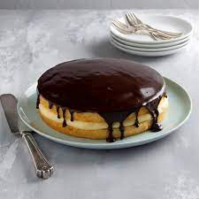

Boston Cream Pie

Look at this Delicious!Boston Cream Pie
This decadent Boston cream pie is a classic American Cake, not pie, made with tender vanilla sponge cake filled with silky vanilla pastry cream all topped by a glossy chocolate ganache.
Ingredients
- 1 cup all-purpose flour
- 1 teaspoon baking powder
- 1/4 teaspoon salt
- 1/2 cup unsalted butter, softened
- 1 cup granulated sugar
- 3 large eggs
- 1 teaspoon vanilla extract
- 1/2 cup whole milk
- 1 package (3.4 oz) instant vanilla pudding mix
- 1 1/2 cups heavy cream
- 1/2 cup semi-sweet chocolate chips
Steps:
- Preheat the oven to 350°F (175°C). Grease and flour two 9-inch round cake pans.
- In a bowl, whisk together the flour, baking powder, and salt.
- In a separate bowl, cream together the butter and granulated sugar until light and fluffy.
- Add the eggs one at a time, beating well after each addition. Stir in the vanilla extract.
- Gradually add the dry ingredients to the wet ingredients, alternating with the milk, beginning and ending with the dry ingredients.
- Divide the batter evenly between the prepared cake pans. Bake for 20-25 minutes, or until a toothpick inserted into the center comes out clean.
- Let the cakes cool in the pans for 10 minutes, then transfer to a wire rack to cool completely.
- Prepare the vanilla pudding according to package instructions. In a separate bowl, whip the heavy cream until stiff peaks form. Gently fold the whipped cream into the prepared pudding.
- Place one cake layer on a serving plate. Spread the pudding mixture over the top. Place the second cake layer on top.
- In a microwave-safe bowl, melt the chocolate chips in 20-second intervals, stirring until smooth. Drizzle the melted chocolate over the cake.
- Refrigerate the Boston Cream Pie for a few hours before serving. Enjoy!